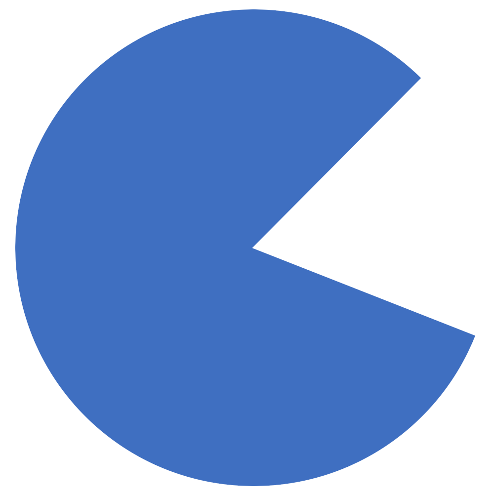
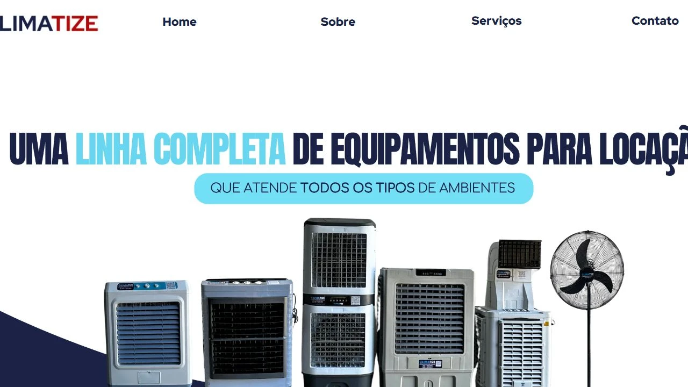
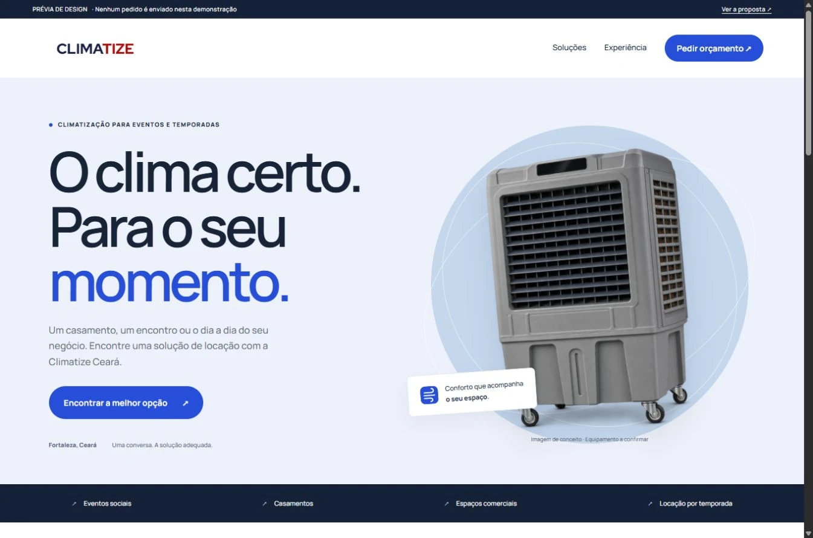
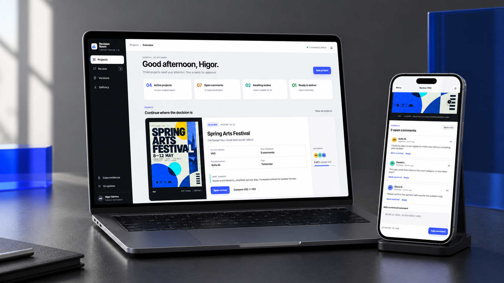

AaClareza.
Texto que conduz.
Títulos legíveis, informações em ordem e conforto de leitura do celular à tela grande.

Higor SelvinoDesign & experiências digitaisUma proposta feita para a Climatize Ceará
Um novo site para apresentar melhor suas soluções e transformar interesse em pedidos com mais contexto.

01 / A oportunidade
Eventos e locações por temporada atendem necessidades diferentes. O site pode ajudar cada pessoa a encontrar o caminho certo.
Data, local e contexto do espaço.
Um pedido que começa pelo momento.
Tipo de ambiente, início e período.
Um pedido que começa pela rotina.
O ponto de partida: o Instagram apresenta locação por temporada; o site atual concentra a comunicação em eventos. A proposta aproxima essas duas ofertas. Ver fontes ↗

O que as pessoas
procuram é se
sentir bem.
02 / Uma mudança que você consegue ver
Arraste a divisória. Compare a página atual com uma direção que valoriza o equipamento, explica as modalidades e evidencia o próximo passo.


HojeDireção propostaComparação da primeira tela na mesma resolução. É uma proposta de design; conteúdo e equipamentos serão validados com a equipe.
03 / Não fique só na imagem
Esta é uma prévia navegável. Escolha evento ou temporada e monte um pedido de exemplo, sem enviar nenhuma solicitação real.
04 / Design com intenção
Uma identidade consistente ajuda a reconhecer a empresa. Uma boa interface ajuda a decidir o que fazer.
Títulos legíveis, informações em ordem e conforto de leitura do celular à tela grande.
Logo preservado, cores organizadas e um ícone de interface proposto para a aba do navegador.
Transições leves confirmam escolhas e conectam etapas. A experiência respeita quem prefere menos animação.
Do serviço ao pedido de orçamento, com acesso direto à conversa e sem cadastro obrigatório.
05 / Ser encontrado e ser entendido
Títulos, descrições e páginas de serviço podem explicar melhor o que a Climatize oferece para quem pesquisa uma solução na região.
A entrega inclui a preparação técnica e a orientação de configuração do Search Console. Posição, prazo de indexação e aparência final são definidos pelo Google.
Locação de climatizadores para casamentos, encontros e eventos corporativos. Conte o local e a data para solicitar uma avaliação da equipe.
Exemplo de título, descrição e ícone propostos. Não é uma captura do Google nem promessa de posição ou de exibição desses elementos.
06 / Quem vai pensar nisso com vocês
Sou o Higor, formado em Design Gráfico pela Universidade Anhembi Morumbi. Trabalho com identidade, comunicação visual e experiências digitais, conectando a apresentação da marca ao que a pessoa precisa fazer.
Projetos reconhecidos no Anhembi Awards e no Expocom Southeast.
 Yen & HomeEscolhas e informações organizadas ↗
Yen & HomeEscolhas e informações organizadas ↗
Revision RoomFluxos e interação de interface ↗Exemplos de projetos do portfólio. Esta proposta para a Climatize foi criada de forma independente.
07 / O que podemos construir juntos
Começar pelo site e por um pedido bem orientado. Evoluir a partir das necessidades reais da equipe.
Conversa sobre a rotina, estrutura das informações, design personalizado, tratamento das imagens e ícone de interface.
Experiência responsiva, apresentação de eventos e temporadas, pedido guiado e resumo para atendimento pelo WhatsApp.
Otimização de imagens, títulos e descrições, sitemap, preparação de indexação e orientação de acompanhamento.
É o primeiro passo de uma parceria, não uma solução engessada. Antes de contratar, validamos o fluxo, as imagens, as prioridades e a forma de investimento.
Conversar sobre o projeto ↗Esta primeira etapa contempla o site e o caminho de orçamento. Agenda de equipamentos, reservas automáticas, pagamentos, sistemas internos e integrações são avaliados separadamente se fizerem sentido para a operação. Domínio, hospedagem e serviços de terceiros são discriminados na proposta comercial. Não há contratação automática nesta página.
08 / A melhor parte ainda vem de vocês
Esta apresentação mostra um caminho. Vocês conhecem a operação de perto. Quero ouvir o que falta, o que já funciona e o que mereceria entrar primeiro.
higorselvino0@gmail.com ↗